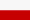
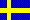
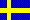

Det europeiska CW-förbundet
EuCWs QRS-vecka

|
Det europeiska CW-förbundetEuCWs QRS-vecka |
|
Reglerna på andra språk



 

EuCW bjuder hjärtligt in alla radioamatörer och lyssnaramatörer att vara med i den årliga EuCWs QRS-vecka. Det här är inte en tävling (contest), tvärtom är det en inbjudan till minska hastigheten och njuta av aktivitet i långsam morse-takt under fem dagar. Dagarna är valda för att undvika de contest-fyllda veckosluten. Målet är inte att visa upp sig och konkurrera utan att minska tröskeln för nykomlingar som vill prova på telegrafi. Inställningen ska vara att delta som en service till potentiella nykomlingar. Det här kommer inte att ge er ära och berömmelse men kan hjälpa andra även om det kan vara lite prövande för tålamodet.
Kör vilken station som helst, även medlemmar i EuCW-klubbar, men använd bara QRS. Vanliga QSO:n med icke-deltagande stationen kan finnas med i loggarna.
EuCWs QRS-vecka har en historia som sträcker sig ända tillbaka till 2001 när den infördes av FISTS. EuCW tackar FISTS för denna förträffliga ide och för att hantera allt arbete under det första decenniet. Sedan 2012 organiseras EuCWs QRS-vecka av AGCW. Ett erkännande delas ut till de mest aktiva deltagarna.
De som vill kan markera deltagare som utmärker sig med upp till tre röster för den "mest läsbara telegrafin" (en röst per station). Om du inte vill rösta så anmäl det i loggen.
Från måndag 0000z till fredag 2359z i veckan efter den fjärde söndagen i april.
Dvs.
2024: 29e april, 00:00 UTC till 3e maj, 23:59 UTC
2025: 28e april, 00:00 UTC till 2e maj, 23:59 UTC
2026: 27e april, 00:00 UTC till 1e maj, 23:59 UTC
2027: 26e april, 00:00 UTC till 30e april, 23:59 UTC
CW/A1A (Datorer som hjälper till att avkoda telegrafin är inte tillåtna)
Det finns också en osynlig klass av deltagande EuCW-klubbar. Du kan knyta ditt deltagande till den EuCW-klubb som du väljer. Lägg till klubbnamnet och ditt medlemsnummer i loggen. Du får lov att berätta din klubbtillhörighet i QSO:na men det krävs inte. Det finns ingen anledning att förvirra nykomlingar med klubbnamn och kryptiska nummer.
Det finns inget speciellt anrop men "CQ QRS" kan vara användbart för att andra ska förstå att du deltar i den här aktiviteten. Erfarna operatörer ska kalla CQ så mycket som möjligt för nykomlingar kan vara blyga och föredrar att välja de stationer som de lätt kan tolka.
Rekommenderat frekvensområde (inget krav) är +/- 10 kHz från centrumfrekvenserna nedan, inklusive WARC-banden (se nedan).
Naturligtvis, icke-QRP-stationer ska inte ropa CQ på populära QRP-frekvenser (se nedan). Håll dig innanför den delen av amatörradiobanden som är reserverad för telegrafi enligt nuvarande bandplan. Det här är en aktivitet och inte en tävling så det finns ingen anledning att undvika de tävlingsfria segmenten.
Använd vilken typ av nyckel du vill. Det är inte tillåtet att använda tangentbord eller förprogrammerade meddelanden från datorer och minnesbuggar, men förprogrammerade CQ-anrop som repeteras är tillåtet. Max-hastigheten är 70 tecken per minut (14 WPM). Om den som svarar gör det i långsammare takt ska den som ropade CQ anpassa sin hastighet till den takten. De som använder förprogrammerade CQ-anrop ska inte förvirra och försvåra för de som anropar genom att byta till personlig och svårläst stil efter anropet.
Varje QSO ska pågå under minst fem minuter. Normala trevliga QSO:n utan speciella krav. QSO med vilken station som helst kan loggas. Du får ha kontakt med vilken station som helst i vilket land som helst, inklusive stationer som inte deltar i QRS-partyt men försök att övertyga dem att köra QRS.
Ge realistisk RST. Undvik att ge alla 599 av slentrian.
Principen att alla stationer är likvärdiga oavsett hur speciella deras prefix och suffix är. Målet är att skapa så mycket QRS-trafik som möjligt så kör gärna dina QSO-vänner varje dag.
Alla loggar består av två delar. En förtasida (sammanfattande blad) och listan av QSO.
Denna information ska finnas med:
1) Egen anropssignal
2) Namn och QTH (som användes under aktiviteten)
3) Adress
4) En EuCW-klubben som du är medlem i
5) Klass (A=QRO, B=QRP eller C=lyssnaramatörer)
6) Antal giltiga QSO:n
7) Dina röster för mest lästbara telegrafin
8) Hur du vill ha ditt erkännande: PDF eller papper.
Du kan lägga till så mycket information som du vill. Du kan dokumentera detaljer om dina sändningar så som till exempel alternativa QTH (en station i Södertälje kanske har för vana att ange staden som QTH i kontakt med svenska stationer medan QTH:t anges som NR STOCKHOLM i kontakt med andra länder. Några kanske anger olika namn så som Lennart i kontakt med svenskar, Lenny i kontakter med Europa och Len i kontakt med DX. Om du väljer att identifiera den klubb du är med i på ett inkonsistent sätt så kanske du ska ange det också. Den här extra informationen är mycket användbar för (eventuella) loggar från lyssnaramatörer. Slutligen bör du berätta om du vill ha ett elektroniskt erkännande (PDF) eller ett erkännande på papper om det visar sig att du är en av de mest aktiva stationerna.
Åtminstone följande information ska finnas för varje QSO:
1) Datum (anges som YYYYMMDD)
2) Tid i UTC (som HHMM)
3) Anropssignal (för den andra stationen)
4) Band
5) Mode (=CW dvs. telegrafi)
6) RST som gavs till den andra stationen
7) RST mottaget från den andra stationen
8) Namn mottaget från den andra stationen
9) QTH mottaget från den andra stationen
Försök undvika loggprogramvara som fyller i namn och QTH från uppslagning i Callbook eller på Internet. Skriv istället ner det som du tar emot under kontakten.
För sänd RST, mottagen RST, Namn och QTH så måste kolumnerna finnas med men felaktiga eller saknade värden är acceptabelt. Du uppmuntras att skriva så mycket information som du vill, till exempel sändare, antenn, väder hos den andra stationen.
Hur du skickar in loggen beror på hur du loggar kontakterna. Det finns tre möjliga fall.
I) Din logg är skapad på datorn.
Här finns ett exempel för en sådan logg
II) Din har loggat på papper men du har tillgång till Internet.
Här finns ett exempel för en sådan logg
III) Logg på papper och loggen skickas in på papper.
Här finns ett sådant exempel logg
I) Användare av logg-programvara exporterar deras logg som ADIF-filer (suffix .adi) och kollar att minst den förväntade informationen finns med. Glöm inte att lägga till information till loggens förstasida i texten i emailet. Kom ihåg att kolla att ADIF-filen innehåller alla element. Vissa ADIF-verktyg hoppar över relevanta fält. Tips, ladda ner FISTS Log-konverterar och använd den för att efterprocessa loggen (Se kapitlet REKOMMENDERAD MJUKVARA).
II) Om du översätter loggen manuellt är det bäst att skriva in informationen i ett logg-program och exportera som ADIF på samma sätt som är beskrivet ovan. Om du vill skapa filerna manuellt från ingenting med en editor eller ett kalkylbladprogram, skapa .txt eller .csv-filer kodade i ASCII-format så att det inte behövs någon speciell mjukvara. Om du kan välja fältavgränsare mellan fälten så välj semikolon. Glöm inte förstasidan.
III) Handskrivna loggar är helt ok. Det minst jobbiga är att ta en kopia på originalloggen eller att be en släkting eller kompis att ta en bild, kolla att det är läsbart och maila den.
Huvudidén är att någon logg är bättre än ingen logg alls precis som en del av ett QSO är bättre än inget QSO. EuCWs QRS-vecka är i första hand inte någon tävling utan ett tillfälle för nykomlingar på telegrafi och personer som är skeptiska till telegrafi att njuta av morse-kod utan risk för hög hastighet. Om du har möjlighet att välja så väl format II). Vissa användare tycker det är svårt att inte använda kalkylbladsprogram. Om du är en av dem, fyll i all information i alla fält och använda YYYYMMDD-formatet.
http://fists.co.uk/members/membersflc.html Gratisprogrammet FISTS Log Converter for Windows bör användas för att skapa loggen för att skicka in i EuCWs QRS-vecka. Det kan antingen läsa QSO:n från en ADIF-fil exporterad från olika loggningsprogram, eller, om du inte använder något loggningsprogram, kan den inbyggda loggboks-funktionen användas för att skapa en elektronisk loggbok. De som använder andra operativsystem kan föredra loggningen enligt alternativ I). Om du har ett modernt loggningsprogram så slå av funktionen som automatiskt fyller i namn och QSO genom att använda lokala databaser eller hämtar informationen från Internet. Du måste mata in det namn och QTH som användes under QSO:t, annars kan det bli avdrag.
Loggar måste vara mottagna senast den 31:e maj.
Rekommendationen aktivitetsområde är +/- 10 kHz från centerfrekvenserna enligt nedan:
2m 144.065 MHz (undvik 144050 p.g.a. E_s-säsongen)
6m Välj frekvens fritt enligt IARUs bandplan
10m 28.055 MHz (Rekommenderad IARU frekvens för QRS)
12m 24.905 MHz
15m 21.055 MHz (Rekommenderad IARU frekvens för QRS)
17m 18.085 MHz
20m 14.055 MHz (Rekommenderad IARU frekvens för QRS)
30m 10.125 MHz
40m 7.035 MHz (håll dig inom telegrafidelen av bandet 7000-7040 kHz)
80m 3.555 MHz (Rekommenderad IARU frekvens för QRS)
160m Välj frekvens fritt enligt IARUs bandplan
Undvik att ropa CQ på de anropsfrekvenser som används för QRP om du inte är en QRP-station. 1843; 3560; 7030; 10116; 14060; 18096; 21060; 24906; 28060 kHz.
När det är bra konditioner mot nordamerika så är det bra att tänka på att frekvenserna 14056.5, 18091.5, 21056.5, 10122.5 ofta används för mobil nödtrafik och nät för folk som jagar county med dussintals intresserade jägare.
Dessa rekommendationer ges som en hjälp att hitta andra QRS-deltagare men de är inte regler som måste uppfyllas. Likväl, duktiga operatörer känner till och respekterar IARUs bandplan som är väletablerat i den internationella amatörradio-gemenskapen. Ladda ner en kopia av bandplanen från iaru.org innan sändaren slås på. Undvik den lägre delen av telegrafidelen av banden.
De vänner av telegrafi som ännu inte är redo att sända på telegrafi är välkomna att läsa reglerna för lyssnaramatörer.
RESULTATLISTOR
(ej översatta)
2001 2002 2003 2004 2005 2006 2007 2008 2009 2010 2011 2012 2013 2014 2015 2016 2017 2018 2019 2020 2021 2022 2023
EuCWs QRS-vecka sponsras och organiseras av AGCW-DL. Integritetspolicy (ej översatt)